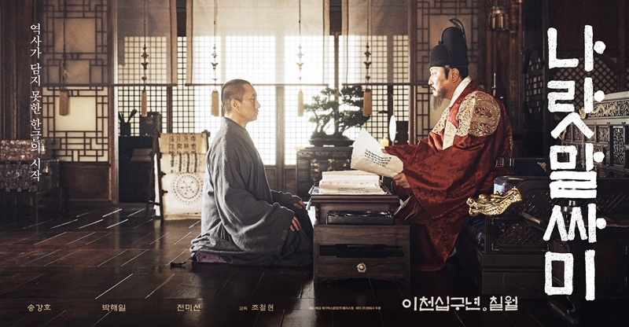
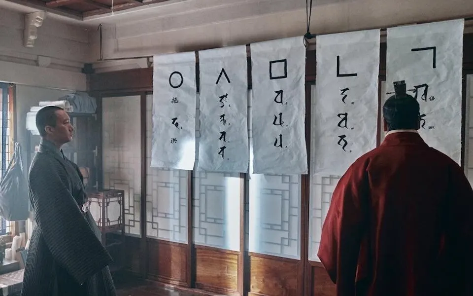
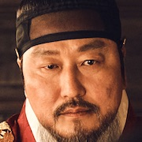
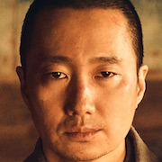
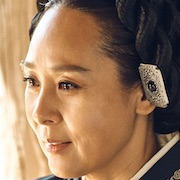

El desarrollo del Hangul (denominado originalmente Hunminjeongeum, «Los sonidos correctos para la instrucción del pueblo») en 1443 bajo el liderazgo del Rey Sejong de Joseon trasciende la mera invención de un abecedario: representó una revolución política, filosófica y pedagógica destinada a romper el monopolio del conocimiento en la península coreana.
El choque filosófico: budismo vs. neoconfucianismo
Durante siglos, Corea estuvo moldeada por dos grandes corrientes de pensamiento cuyas visiones sobre el ser humano y el Estado chocaban frontalmente:
Budismo
Centrado en la transformación interior, la meditación, la compasión y el desapego para liberarse del sufrimiento personal. Promovía una vida enfocada en la iluminación individual, a menudo apartada de las obligaciones mundanas en los monasterios.
Neoconfucianismo
Centrado en el orden social, la jerarquía, el respeto a la autoridad y la piedad filial. Para esta filosofía, el bienestar dependía de que cada individuo cumpliera rigurosamente su rol dentro de la familia y el Estado.
Cuando la dinastía Joseon asumió el poder en 1392, adoptó el neoconfucianismo como ideología oficial y persiguió al budismo. Los nuevos gobernantes consideraban que los monasterios acumulaban demasiada riqueza y poder, que los hombres se ordenaban monjes para evadir impuestos y el servicio militar, y que el enfoque budista de salvación individual no servía para gobernar un país. Como resultado, el Estado confiscó tierras, cerró templos y relegó a los monjes a la clase social más baja.
El contexto sociopolítico: control de élite y resistencia
- El monopolio de la clase Yangban: la escritura culta dependía de los Hanja (caracteres chinos adaptados). Su dominio requería décadas de estudio intensivo, lo que limitaba el acceso a la lectura y escritura a la aristocracia y la burocracia imperial neoconfucianista.
- Analfabetismo y desamparo popular: el pueblo llano no podía comprender los edictos reales, formular peticiones ante la justicia ni registrar transacciones comerciales o remedios médicos.
- Oposición de la burocracia: eruditos neoconfucianistas sostuvieron que la creación de un sistema de escritura propio degradaría a Corea al estatus de nación «bárbara», ocultando el verdadero temor de la élite: perder la ventaja política del dominio exclusivo de las letras.
La idea central
El Hangul no nació solo para escribir mejor, sino para que el conocimiento dejara de ser propiedad de unos pocos. Su invención fue, ante todo, un acto de justicia social.
Los fundamentos de su diseño: ciencia, anatomía y metafísica
1. Principio anatómico (consonantes)
Las consonantes básicas representan gráficamente los movimientos y posiciones de los órganos fonadores al pronunciar cada sonido:
La lengua bloqueando la garganta.
La punta de la lengua tocando el alvéolo superior.
El contorno de los labios cerrados.
La forma afilada de un diente para los sonidos dentales.
El paso del aire a través de la garganta abierta.
2. Principio filosófico (vocales)
Las vocales se estructuraron combinando tres símbolos de la cosmología oriental:
3. Influencia fonética del sánscrito
Debido a que el coreano es una lengua aglutinante (no aislante como el chino), Sejong y sus colaboradores analizaron los sistemas fonéticos de lenguas orientales clásicas, como el sánscrito y las escrituras índico-tibetanas, para clasificar los sonidos por puntos de articulación.
4. Estructura modular
En lugar de una secuencia lineal, el Hangul empaqueta consonantes y vocales dentro de bloques silábicos cuadrados. Por ejemplo, 한 (Han) reúne tres letras en un solo bloque:
La película: Las Letras del Rey (2019)
Dirigida por Jo Cheol-hyeon, la película dramatiza este evento histórico centrándose en el choque ideológico de la época.
Sinopsis y conflicto dramático
El Rey Sejong (Song Kang-ho), aquejado de diabetes y perdiendo la vista, busca crear urgentemente un alfabeto fácil de aprender para erradicar el analfabetismo. Al enfrentarse a la feroz resistencia de sus ministros neoconfucianistas, su esposa, la Reina Sohyeon (Jeon Mi-seon), lo introduce al monje budista Shinmi (Park Hae-il). A pesar de la brecha de clase y la persecución estatal contra el budismo, Shinmi aporta su profundo conocimiento del sánscrito para destrabar la estructura del nuevo sistema de escritura.


Fotogramas de Las Letras del Rey (2019).
Personajes principales
Song Kang-ho
Retratado como un líder físicamente deteriorado que sufre por la subordinación ante China y que prefiere el espíritu de un erudito.

Park Hae-il
Un monje obstinado de la clase social más baja que ve en esta colaboración una vía para devolverle la dignidad y presencia al budismo en Joseon.

Jeon Mi-seon
Devota budista que actúa como puente diplomático y emocional entre el rey y el monje.

Controversia y recepción comercial
Una película que incomodó
La película desató una gran polémica en Corea del Sur al desafiar la narrativa histórica oficial de que «el Rey Sejong creó el Hangul por sí solo». Al posicionar al monje budista Sinmi como co-creador clave, el filme sufrió críticas severas y boicots de diversos sectores religiosos y conservadores, lo que provocó su fracaso en taquilla al recaudar menos de 1 millón de entradas (frente a su punto de equilibrio de 3.5 millones).
¿Cómo fue la difusión del Hangul?
La difusión del Hangul es una de las historias de supervivencia cultural más fascinantes de Asia Oriental. Aunque la élite gobernante neoconfucianista intentó enterrar el alfabeto tildándolo despectivamente de «Onmun» (escritura vulgar) o «Amgul» (escritura de mujeres), el sistema diseñado por el Rey Sejong logró expandirse desde las sombras de la sociedad hasta convertirse en la piedra angular de la identidad nacional coreana.
La estrategia inicial del Rey Sejong: proyectos populares
Para evitar que el proyecto quedara varado tras su promulgación en 1446, el propio Sejong utilizó el Hangul para publicar materiales de impacto directo en el pueblo:
- Manuales agrícolas y médicos: tradujo tratados de agricultura y remedios medicinales prácticos para que la gente común los entendiera sin depender de doctores de la corte.
- Textos religiosos y lírica: compuso Worin Cheongang Jigok («Canciones de la luna reflejada en mil ríos»), una serie de poemas para honrar a su difunta esposa, la Reina Sohyeon, que sirvieron como demostración pública de la belleza y versatilidad del Hangul.
- Cursos de formación para funcionarios: incluyó el examen de Hangul en la selección de funcionarios públicos menores, obligando a los rangos administrativos bajos a aprenderlo para redactar edictos.
Las verdaderas guardianas del alfabeto: las mujeres y las damas de honor
Puesto que los hombres de la clase aristocrática (Yangban) continuaban escribiendo e intercambiando diplomacia exclusivamente en chino clásico para mantener su estatus político, el Hangul fue adoptado masivamente por la mitad olvidada de la población: las mujeres.
- Damas de la corte (Gungnyeo): las sirvientas y administradoras del palacio real utilizaban el Hangul para llevar la contabilidad interna, gestionar pedidos e intercambiar mensajes privados.
- Mujeres de la aristocracia: en una sociedad donde las mujeres permanecían confinadas en sus hogares, el alfabeto se convirtió en su vía de escape intelectual y emocional. Escribían diarios, intercambiaban extensas cartas personales (Eonmun) y redactaban recetas de cocina que circularon entre familias de generación en generación.
- Peticiones judiciales: las mujeres del pueblo comenzaron a redactar demandas e inconformidades directamente en Hangul ante las autoridades, lo que obligó al propio sistema judicial a aceptar y procesar escritos vernacularmente.
La explosión de la literatura popular (siglos XVII y XVIII)
Con el tiempo, el Hangul pasó del ámbito estrictamente doméstico al entretenimiento de masas gracias a dos grandes fenómenos culturales:
La novela vernácula
Eonmun Soseol: surgieron libros de ficción en coreano dirigidos al público general. El caso emblemático fue la Historia de Hong Gildong (el equivalente coreano a Robin Hood). Estas obras se leían en voz alta en los mercados por narradores ambulantes, alcanzando tanto a analfabetos como a lectores populares.
Poesía y canciones
Sijo y Pansori: la lírica tradicional coreana y los libretos de la ópera popular comenzaron a transcribirse en Hangul, preservando la tradición oral folclórica que el chino escrito jamás pudo capturar.
El movimiento Sirhak y la reescritura como identidad (siglo XIX)
A finales del periodo Joseon, surgió el Sirhak («Estudio Práctico»), una corriente de intelectuales reformistas que rechazaba el escolasticismo neoconfucianista rígido. Estos pensadores abogaron por el desarrollo nacional y reivindicaron el Hangul como el único sistema capaz de educar a las masas e impulsar la modernización de Corea.
A esto se sumó la llegada de los misioneros cristianos, quienes tradujeron la Biblia y los catecismos íntegramente al Hangul en lugar del chino clásico. Esto impulsó la alfabetización masiva, especialmente en sectores marginados.
Resistencia bajo la ocupación japonesa y estatus oficial (siglo XX)
El triunfo definitivo del Hangul ocurrió paradójicamente durante sus momentos más oscuros:
- Oficialización formal (1894): en las Reformas Gabo, el gobierno promovió por primera vez el Hangul como la escritura nacional oficial para documentos gubernamentales.
- Ocupación japonesa (1910–1945): el Imperio del Japón prohibió el uso del idioma y la escritura coreana en un intento de asimilación cultural. La preservación y enseñanza clandestina del Hangul por parte de la Sociedad de la Lengua Coreana transformó al alfabeto en el símbolo máximo de la resistencia patriótica.
- Post-liberación (1945): tras la liberación del dominio colonial, tanto Corea del Norte como Corea del Sur desterraron progresivamente el uso de los caracteres chinos de los periódicos, escuelas y leyes, adoptando el Hangul como el único sistema de escritura nacional oficial.
Línea de tiempo: la historia del Hangul
1392
La dinastía Joseon asume el poder y adopta el neoconfucianismo como ideología oficial, persiguiendo al budismo.
1443
El Rey Sejong desarrolla el Hunminjeongeum, el sistema de escritura que luego se conocería como Hangul.
1446
Se promulga el alfabeto. Sejong impulsa su difusión con manuales agrícolas y médicos, poesía y exámenes para funcionarios.
Siglos XVII y XVIII
Explosión de la literatura popular: novela vernácula (Eonmun Soseol), Sijo y Pansori.
Siglo XIX
El movimiento Sirhak reivindica el Hangul; los misioneros cristianos traducen la Biblia y los catecismos.
1894
Reformas Gabo: el Hangul se promueve como escritura nacional oficial para documentos gubernamentales.
1910–1945
Ocupación japonesa: prohibición del idioma y la escritura coreana. La enseñanza clandestina lo convierte en símbolo de resistencia.
1945
Post-liberación: Corea del Norte y Corea del Sur adoptan progresivamente el Hangul como único sistema de escritura nacional oficial.
Del Hunminjeongeum de 1443 a la escritura oficial de dos Estados modernos, la historia del Hangul demuestra que un alfabeto puede ser mucho más que un conjunto de signos: puede ser una herramienta de poder, un refugio de resistencia y, finalmente, la voz de un pueblo.
Volver a todas las noticias